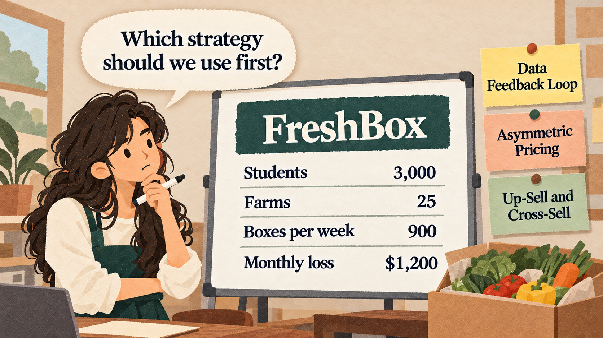

FreshBox sends university students weekly meal-kit boxes with fresh vegetables from local farms. It keeps $3.00 from each box. Sora is its founder.
| ONE MONTH | VALUE |
|---|---|
| Students who signed up | 3,000 |
| Local farms that supply vegetables | 25 |
| Boxes ordered per week | 900 |
| Revenue (900 x $3.00 x 4 weeks) | $10,800 |
| Monthly costs | $12,000 |
| Monthly loss | $1,200 |
Each Module 2 strategy suggests a different plan.
Which strategy should FreshBox use first?
Diagnose the business problem first, then use the Module 2 strategy that fits it. Check the evidence for that strategy's key condition, compare the options with the same numbers, and start with one strategy while planning the next.
| STRATEGY | PROBLEM IT SOLVES | KEY CONDITION | NUMBER TO WATCH |
|---|---|---|---|
| Data Feedback Loop (2.1) | We do not know what customers really want | Strong signals and permission | Churn or repeat rate |
| Asymmetric Pricing (2.2) | Two groups need each other: who pays? | One side price sensitive; the other gains money | Money-side revenue vs. subsidy cost |
| Up-Sell and Cross-Sell (2.3) | Many users, but they spend too little | A higher tier or related product customers value | Conversion and attach rate |
Write the problem in one sentence that does not include a solution.
"Students order a box for two weeks and then stop" points to a customer-knowledge problem (Session 2.1), not a pricing problem.
Starting with a favorite strategy ("let's add a premium box") before knowing what is wrong.
Each strategy works only when its key condition is true.
Asymmetric pricing needs a side that is not price sensitive. If most farms would leave over a $200 fee, the condition is weak.
Using a strategy's words without its conditions, such as calling a business a "platform" when it does not connect two groups.
For each option: the change in the monthly result, the time to result, and the main risk.
One plan adds $1,800 a month but needs three months; another adds $3,240 a month and can start next week.
Comparing one option's best case with another option's worst case.
Fix the most urgent problem first, then plan which strategy comes next and why.
First up-sell and cross-sell to stop the monthly loss, then use a data feedback loop to learn which premium items students want.
Trying all three strategies at once, so the team cannot tell which one worked.
Spotify keeps a free tier paid for by advertisers, uses listening signals to build personal playlists, and up-sells free listeners to Premium, Duo, and Family plans.
Members create profiles for free. Recruiters and companies pay to search and contact members, and some members pay for Premium features.
WeWork rented office space on long leases and rented desks to members on short contracts. Before its planned 2019 stock listing (IPO), it called itself a technology platform and was valued at about $47 billion by private investors. When its filings were published, investors questioned that description, and WeWork withdrew the IPO in September 2019.
In 2017, MoviePass cut its price to $9.95 a month for up to one movie a day, while paying theaters close to the full ticket price for each movie. Its managers hoped to earn money later from subscriber data. Losses grew with every movie watched, and the service shut down in 2019.
Do we know what customers want?
If not: Data Feedback Loop
Do we connect two groups and need to decide who pays?
If yes: Asymmetric Pricing
Do many customers use the product but spend too little?
If yes: Up-Sell and Cross-Sell
| BAKERY APP OPTION | MONTHLY CHANGE | TIME TO RESULT | MAIN RISK |
|---|---|---|---|
| Cake up-sell | +$600 | 2 weeks | Customers may not want cake |
| Data loop on favorite breads | +$900 | 3 months | Customers may refuse permission |
What you give up to get something you value more.
A promise, written before you start, about which result would make you change your decision.
| BUSINESS | STRATEGY | WHY |
|---|---|---|
| (a) Fitness app | Up-Sell and Cross-Sell | Many users, few paying |
| (b) Marketplace | Asymmetric Pricing | Two groups; the question is who pays |
| (c) News app | Data Feedback Loop | Does not know which signals show a real need |
| (d) Bakery app | Up-Sell and Cross-Sell | More spending per order: a drink or a larger size |
PetPal connects pet owners with student pet sitters. It has 1,000 pet owners; only 300 book a second time.
PetPal does not know why owners do not come back. Sitters are happy and many are waiting for bookings.
Collect which recipes students cook and rate, with permission. Expect orders to rise from 900 to 1,050 boxes a week, after about 3 months.
Charge each farm $200 a month. In a survey, 40% of farms said they would leave if charged.
Premium box: FreshBox keeps $5.00 instead of $3.00; 20% of boxes. Spice kit: keeps $2.00; 25% of boxes. Starts next week.
| OPTION | MONTHLY CHANGE | TIME | MAIN RISK |
|---|---|---|---|
| A: Data loop | +$1,800 (150 x $3.00 x 4) | About 3 months | Slow; students may refuse permission |
| B: Charge farms | $3,000 (15 x $200) | Next month | 10 farms leave; fewer vegetables, fewer boxes |
| C: Up-sell + cross-sell | +$3,240 ($1,440 + $1,800) | Next week | Fewer students may choose Premium |
Match a business problem to the Module 2 strategy that fits it.
Check a strategy's key condition with evidence.
Compare options with the same numbers and choose which strategy to use first.
Hagiu, A., and Wright, J. (2020). When Data Creates Competitive Advantage. Harvard Business Review.
Eisenmann, T., Parker, G., and Van Alstyne, M. W. (2006). Strategies for Two-Sided Markets. Harvard Business Review.
The We Company (2019). Form S-1 Registration Statement. U.S. Securities and Exchange Commission.